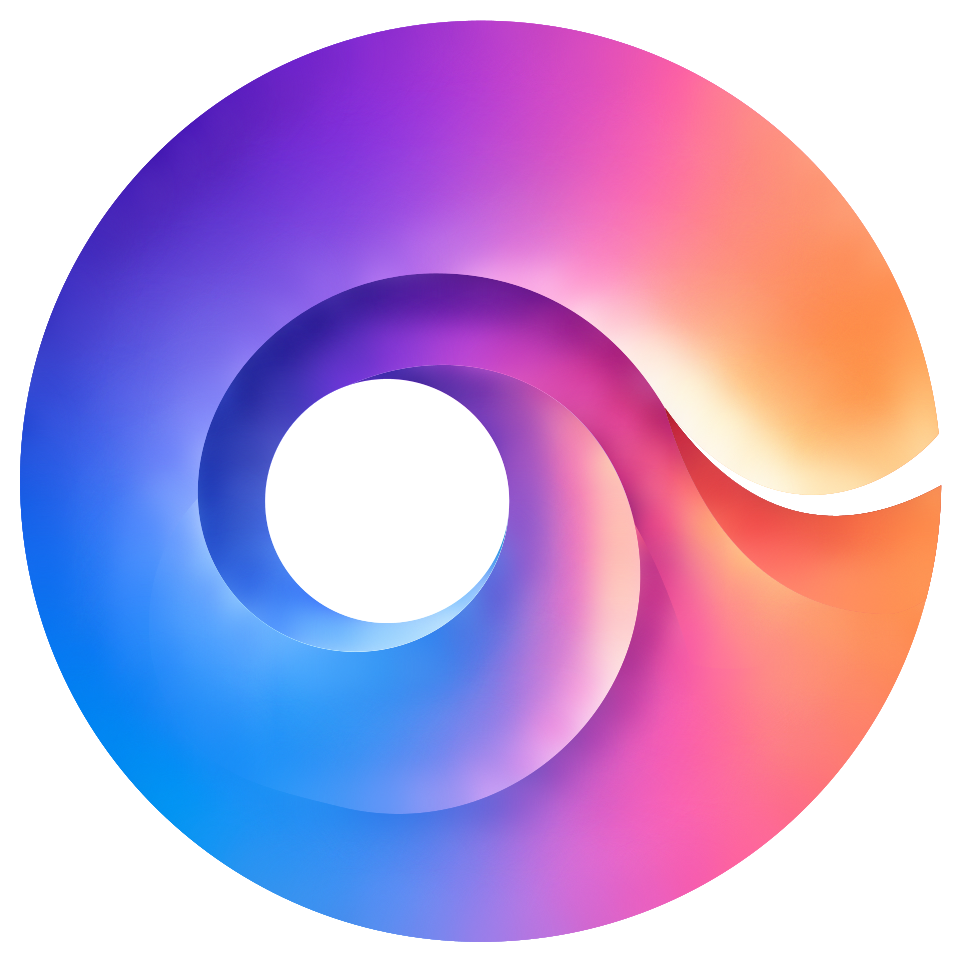
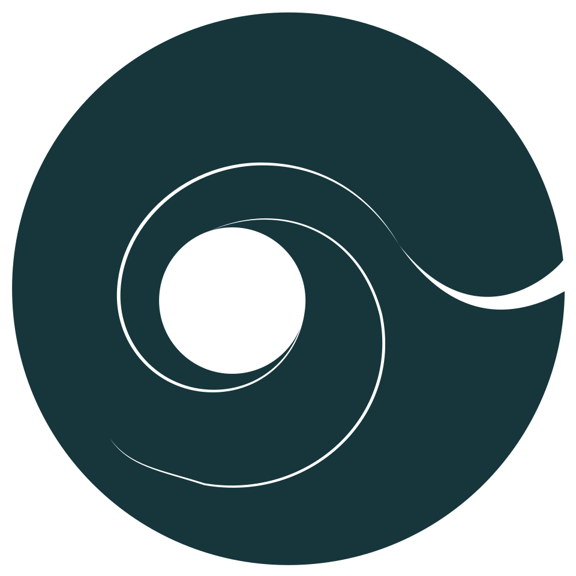

{kind=link}
Ankommen
Ein Gedanke für dich.
Ein digitales System für Selbstverständnis und Beziehung. Klar in der Form. Offen für das, was Menschen verbindet.

Resonanz entsteht nicht durch Verschmelzung. Sondern im Dazwischen.
Offene Flächen geben Inhalt und Menschen Raum.
Kreis, Öffnung und Verbindung machen Zusammenhänge sichtbar.
Farbe kennzeichnet einen aktiven Moment, nie einen ganzen Menschen.
Eine warme Fläche bewahrt persönliche Gedanken. Sie bleibt die Ausnahme.
Jeder Kreis steht für einen eigenen Raum. Die Verbindung liegt dazwischen. Verändere Nähe, Resonanz und Offenheit.
Der Abstand verändert sich. Die Kreise bleiben eigenständig.
Die Verbindung gewinnt an Präsenz, nicht die ganze Zeichnung.
Die Öffnung wird weiter. Sie zeigt, was nicht abgeschlossen ist.
Gleicher Radius in alle Richtungen. Auch während der Bewegung.
Die kurze Kurve trifft beide Konturen exakt. Keine schwebenden Enden.
Die Öffnungen bleiben unten. Nähe verändert nie die Identität.
Gestaltungsstudie, keine Messung von Beziehungen.
Keine neue Form. Keine neue Linie. Die bestehende Klangsignatur bleibt erhalten. Nur die Übergänge der inneren Kurven wurden geglättet.
Relief ist eine Materialanwendung, kein neues Logo. Dieselben Konturen werden aus dem Papier gehoben. Die flachen Originalvarianten bleiben für kleine Darstellungen erhalten.
Die Originaldateien bleiben separat erhalten. Die Korrektur richtet benachbarte Kurventangenten aus; Ankerpunkte werden nicht verschoben. Die bewusste Öffnung des Logos wird nicht abgerundet oder geschlossen.

Neutrale Flächen tragen die Marke. Feldfarben ordnen Inhalte. Statusfarben erklären, was gerade geschieht. Diese drei Rollen bleiben getrennt.
Die Gruppierung bleibt durch Nummern und Positionen auch ohne Farbe lesbar.
Die Feldnummern und Gruppen A–C sind strukturelle Platzhalter. Fachliche Feldbezeichnungen werden nicht vorweggenommen.
Immer mit Text und einem unterscheidbaren Zeichen. Nie nur über Farbe.
Raum für dich.Und füreinander.
Was bewegt dich gerade?
Abstand, Ausrichtung und wenige Trennlinien strukturieren die Oberfläche. Gezielte Schatten machen Material und Bedienzustände spürbar.
Eingaben liegen leicht vertieft. Ein gespeicherter Gedanke hebt sich wie ein Blatt Papier an. Licht kommt von links oben; Druck gibt sanft nach.
Du musst nicht jede Spannung sofort auflösen.Paper Relief · #F6F1E7
Primär und sekundär unterscheiden sich durch Gewicht, nicht durch Animation.
Ein Gedanke, eine Pause, ein Austausch. Die Tageslinie ordnet Momente, ohne daraus einen Feed zu machen.
Ein Gedanke für dich.
Eine bewusste Pause.
Ein Moment mit Mara.
Drei Gruppen mit je drei Feldern. Grosse Abstände trennen Gruppen, kleine trennen Felder. Wähle einen Bereich.
Feldbezeichnungen sind noch offen.
Zwei kreisförmige Räume. Eine kurze Verbindung. Nähe verändert den Abstand, nicht die Identität.
Die Spur verbindet Erfahrungen. Eine Unterbrechung trennt das, was war, von dem, was noch möglich ist.
Langsam im Ausdruck. Direkt in der Bedienung. Nur der Beziehungsraum atmet; Text, Navigation und Logo stehen still.
Spürbare Atmung statt Aufpoppen. Einmaliger Linienaufbau in 1,8 Sekunden und weiche Kapitelauftritte begleiten das Entdecken. Ein gemeinsamer Takt hält Konturen und Verbindung zusammen. Pausiert ausserhalb des sichtbaren Bereichs und bei ausgeblendeter Seite.
Die Systemeinstellung für reduzierte Bewegung wird respektiert.
Du brauchst mehr Raum für dich.
Keine energetischen Deutungen. Kein Urteil.
Hier seid ihr unterschiedlich.
Keine Diagnose. Keine Bewertung von Kompatibilität.
Ihr braucht nicht dasselbe, um euch nah zu sein.
Verständliche Beobachtungen statt Beziehungsscores.
0 / 8
Bestätigte Gestaltungsregeln. Eine Checkliste ersetzt kein visuelles Review.
Das Logo und die Produktgrafik sind getrennte Systeme. Keine Animation verändert das Logo. Schriften und ihre OFL-Lizenzen liegen im Ordner assets/fonts.
:root {
--elanum-canvas: #F0ECE3;
--elanum-ink: #16363B;
--elanum-text-secondary: #526166;
--elanum-text-muted: #617275;
--elanum-paper: #F2ECDD;
--elanum-paper-light: #F6F1E7;
--elanum-violet: #6756D9;
--elanum-blue: #4D7FE8;
--elanum-orchid: #9466DF;
--elanum-rose: #D85BA9;
--elanum-pink: #F0719A;
--elanum-coral: #E87872;
--elanum-amber: #C9953E;
--elanum-moss: #6D9477;
--elanum-teal: #3E898D;
--elanum-signal: #89560E;
--elanum-info: #286F9B;
--elanum-error: #A7394D;
--elanum-radius-control: 8px;
--elanum-radius-circle: 50%;
--elanum-trace: 1.6px;
--elanum-bridge: 2.8px;
--elanum-motion-ui: 180ms;
--elanum-motion-breath: 7800ms;
--elanum-font-display: "Yrsa", serif;
--elanum-font-ui: "Albert Sans", sans-serif;
}{kind=link}
{kind=link}
{kind=link}
{kind=link}